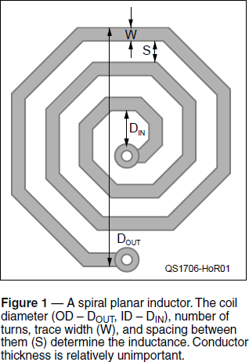
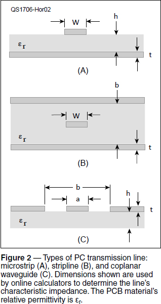
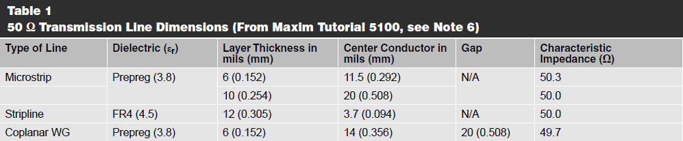
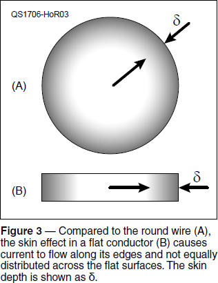

Experiment #173 — The PC Trace at RF
After last month’s column, I’m sure you have a new respect for that piece of wire carrying your RF. The same considerations apply to PC boards, too — and more! For high-frequency digital signals and our microwave RF, they can behave like inductors and transmission lines. Let’s take a closer look.
Inductance of Straight Traces
Just like the straight wire inductance we discussed last month, you can calculate the inductance of a PC trace,1 but there’s a catch: the inductance of the whole connection also depends on the return path for the current. This is because the fields from the current in the return path will interact with those from the current in the main trace. Unless you know the return path, the inductance is unknown as well.
Dr. Howard Johnson gives a formula for inductance of a trace that runs parallel to one or two PC board ground-plane layers: (L per inch) = Z0 × (delay per inch). You have to know the delay per inch, and Z0, the characteristic impedance of the transmission line formed by the trace and the ground plane.2
Thankfully, you usually don’t need to know the inductance of the PC board trace. Unless, that is, you want to make an inductor.
Making Inductors with PC Board Traces
If you work on VHF/UHF/microwave gear, you’ll have seen PC board inductors. They are usually planar spirals, like in Figure 1, in the shape of octagons, hexagons, squares, or circles. The inductance is calculated between the two ends, but the exact value depends on where the inner end connection is routed and the arrangement of ground-plane layers.

There is an online calculator for these inductors at the All About Electronics website.3 A five-turn octagonal coil made with 20-mil traces, spaced twice the trace width, is 0.78 inches across and has approximately 408 nH of inductance. (Three different methods of calculation are provided.) As long as you aren’t expecting precision, these coils are very inexpensive and easy to fabricate. Some PC layout software can create this type of inductor automatically, as well.
PC Board Transmission Lines
The dependence on return path may sound like a complicating factor, but the PC board material itself can be used to create a transmission line. There are several variations in which the PC trace forms one of the conductors and ground-plane layers form the other. These are summarized in Figure 2, where εr is the dielectric constant of the PC board material. (FR4 is the most common material at and above VHF.)

Microstrip (Figure 2A) is the most common of the PC transmission lines, consisting of an isolated trace above a ground plane. Stripline (Figure 2B) is also common in multilayer boards with the PC trace embedded in the PC board material and centered between two ground-plane layers. Offset stripline (not shown) is a variation of stripline in which the PC trace is not centered between the ground-plane layers. Finally, at microwave frequencies, coplanar waveguide becomes feasible, as shown in Figure 2C.
In microstrip and stripline, the RF energy is mostly (but not completely) confined to the region between the large surface of the PC trace and the ground plane. Current is spread across the surface of the PC trace at a depth determined by the skin effect.
In contrast, the RF energy in coplanar waveguide is contained between the edges of the PC trace and the edges of the adjacent ground plane. The middle surfaces of the PC trace carry little, if any, current. This increases resistive losses because the current is concentrated in a smaller region, but the waves travel mostly in air and, therefore, have lower losses. This becomes an important tradeoff at microwave frequencies.
The math to calculate Z0 of these PC transmission lines is ferocious. Because most designs work with 50 Ω impedances, combinations of common copper foil thicknesses, trace widths, and board layer thicknesses have been calculated to produce 50 Ω. Several are shown in Table 1. (For the truly interested reader, see Wadell’s book in the notes.4) The free program AppCAD (www.hp.woodshot.com) handles many of these calculations for you, along with S-parameters and balun calculations.

Skin Effect and Ampacity
The skin effect, discussed last month for round wire, has an interesting effect on isolated flat traces and strap — not only does it cause current to concentrate at the surface, as in Figure 3A, but also at the edges of flat conductors, as shown in Figure 3B. At lower frequencies, this isn’t such a big concern, but at 1 MHz, skin depth in copper is down to 65 μm (0.0026 inches) and 1⁄10 of that at 100 MHz (6.5 μm and 0.00026 inches). With the typical “1 ounce” coating of copper (1 ounce of copper per square foot) on a PC board having a thickness of 1.4 mils (1 mil = .001 inch, 1.4 mil = 0.035 millimeter), the skin effect begins to increase trace resistance substantially above about 5 MHz. This matters both in HF power circuitry and in circuits operating at and above VHF.

The lesson to learn here is to be careful when using PC boards for RF power circuits. As for coplanar waveguide, the width of the trace becomes less important than the thickness. Because most of us do not have access to electromagnetic simulators and the exact configuration of traces is hard to model, we have to be aware of the effect and conduct high-power tests to look for hot spots, etc.
RF PCB Design
We’ve just scratched the surface of RF PCB layout. As you might imagine, there is a lot of hard-won knowledge you can apply as the megahertz turn into gigahertz. A few guidelines are listed in the notes.5, 6 You can collect or bookmark these and other references — don’t be afraid to turn up the frequency and have fun with RF!
Notes
1A 20-mil trace of 1-ounce copper has an inductance of approximately 25.7 nH/inch (chemandy.com/calculators/flat-wire-inductor-calculator.htm).
2H. Johnson and M. Graham, High-Speed Digital Design: A Handbook of Black Magic, Prentice Hall, 1993.
3www.circuits.dk/calculator_planar_coil_inductor.htm
4B. Wadell, Transmission Line Design Handbook, Artech House, Inc.
5C. Bourde, J. Fuller, S. Long, “RF Prototyping Techniques,” UC Santa Barbara, 1998 (home.sandiego.edu/~ekim/otherjunk/rf_proto.pdf).
6M. Bailey, “Tutorial 5100 — General Layout Guidelines for RF and Mixed-Signal PCBs,” Maxim Integrated (www.maximintegrated.com/en/app-notes/index.mvp/id/5100).